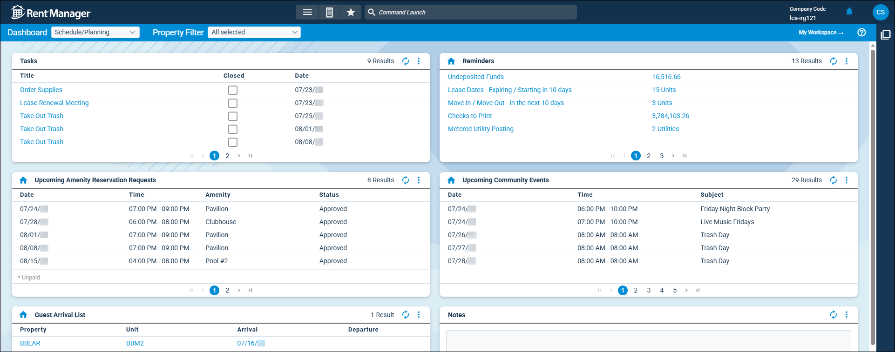

Source: https://rmxhelp.rentmanager.com/Topics/Express/KB/LP-DT-Scheduling-Planning.htm
Scheduling and Planning Dashboard Tiles
Rent Manager includes several dashboard tiles that provide at-a-glance data and analysis to help you track appointments, upcoming events, arrivals, follow-ups and more. With these dashboard tiles, you can view important business tasks, upcoming appointments and community functions, and scheduled or expected arrivals and departures at short-term (STR) properties.

Add the following scheduling and planning-related tiles to your dashboard to ensure you never miss any upcoming tasks and appointments:
| Dashboard Tile | Description |
|---|---|
|
Appointments |
The appointment's name and start time in a days, hours, and minutes format display. This tile helps you view upcoming scheduled appointments to ensure you never miss any upcoming events. |
|
Follow-up |
The history/note items you created that were assigned a Follow-up Date display. Clicking on any item in the Note column opens the History/Notes pop-up of the entity on which the note was entered. |
|
Guest Arrival List |
The property and unit the guests reserved as well as the start and end dates of their reservation display. This tile helps you track scheduled or expected arrivals and departures at short-term rental (STR) properties occurring within a set number of days. |
|
Notes |
This tile allows you to record tasks or reminders in a text box. The contents of this tile are unique to each user and are not shared. |
|
Reminders |
This tile helps you to track important business tasks and deadlines so that you can ensure each one is completed in a timely manner. |
|
Tasks |
The topic of the task, whether or not it's complete, and the date it's due display. This dashboard tile helps you to track important business tasks. |
|
Upcoming Amenity Reservation Requests |
The date of the reservation request, its start and end time, the name of reservable amenity associated with the request, and the status of the reservation display. This tile helps you track amenity reservations your tenants requested to rent, such as a clubhouse. |
|
Upcoming Community Events |
The date on which the community event is taking place, the name of the event, and its start and end times display. This tile tracks events scheduled on your Community Calendar to ensure that you don't miss any upcoming functions. |